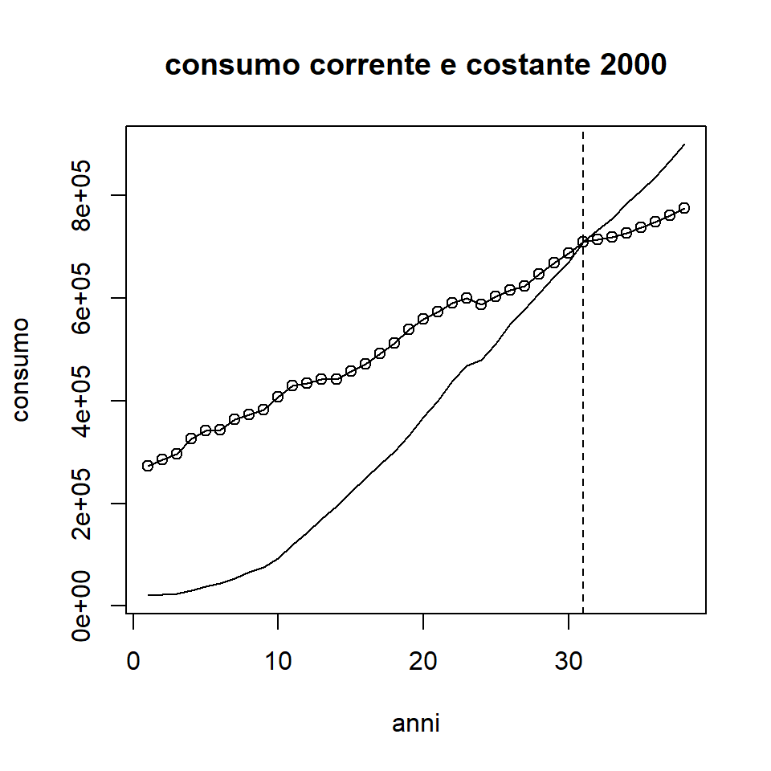
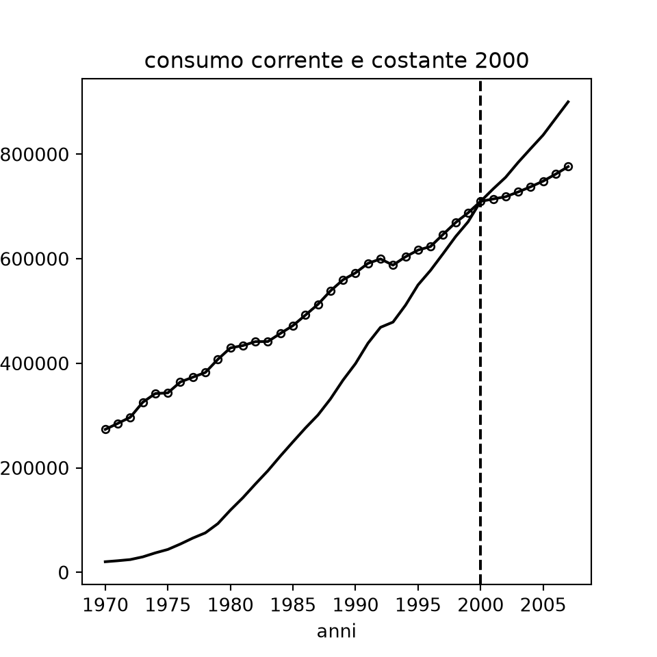
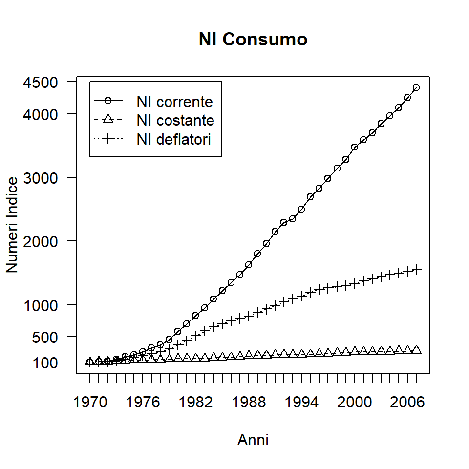
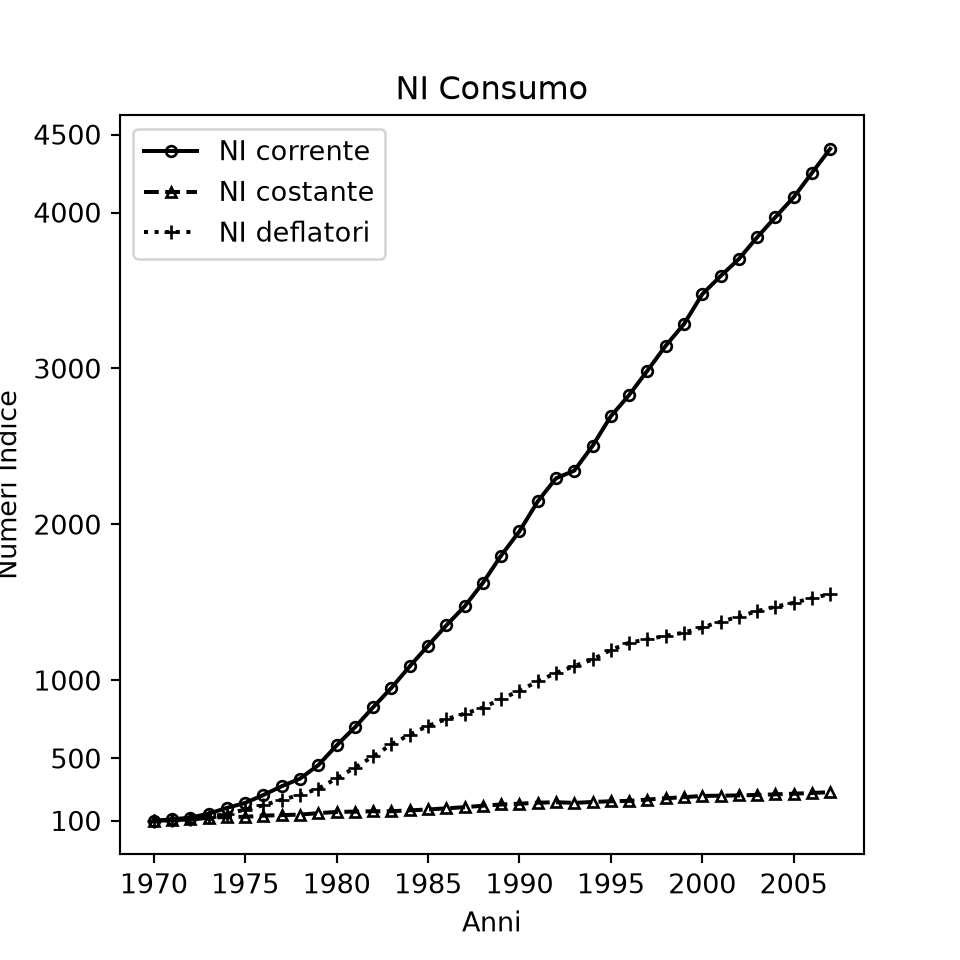

ni <- read.csv2("data/numeroindice.csv")
attach(ni)
V0=sum(p0*q0)
V1=sum(p1*q1)
V2=sum(p2*q2)
V0;V1;V2[1] 45[1] 68[1] 111Il confronto di aggregati nel tempo o nello spazio richiede l’omogeneità delle grandezze comparate: non possiamo confrontare il prezzo dei sigari toscani in lire con quello di un altro tipo di sigari in euro, oppure confrontare velocità in km orari e in miglia orarie. I numeri indice aiutano a compiere confronti tra variabili poiché sono indipendenti dall’unità di misura: diremo che il numero indice è un numero puro. Ovviamente esistono molteplici possibilità di costruire un numero indice; dipende dalle esigenze conoscitive dello studioso.
Supponiamo di voler confrontare il numero di delitti commessi contro la persona in due città, diciamo A e B. La città A ha un numero di delitti per 100 persone che hanno subito l’evento pari a 30, mentre la seconda pari a 60 (sempre su 100). Evidentemente A è meno “pericolosa” di B, se i delitti sono una proxy dei livelli di sicurezza di una comunità. La prima città è meno pericolosa del \((30/60 - 1) \cdot 100 = (0{,}5-1) \cdot 100 = -50\%\), cioè della metà. Questo rapporto è un numero indice, un numero puro che esprime una variazione relativa indipendente dall’unità di misura di partenza. E ancora: di quanto sono aumentati in percentuale i delitti per 100 persone offese nella città A, se essi sono passati da 20 nel 2000 a 40 nel 2008? La risposta è immediata: \((40/20 - 1) \cdot 100 = (2-1) \cdot 100 = +100\%\), sono raddoppiati. In questo modo il confronto di aggregati e variabili può essere fatto agevolmente sia nello spazio sia nel tempo e, poiché il denominatore del numero indice rappresenta la base di raffronto, nel caso del tempo è usualmente indicato il periodo meno recente, in modo che la variazione venga letta in maniera intuitiva dal periodo più lontano a quello più vicino.
Continuiamo il nostro esempio scegliendo un prodotto, per esempio la carne suina consumata da una certa famiglia in una data area territoriale per un qualsivoglia periodo. Se la famiglia Rossi acquistava 1 kg di carne alla settimana l’anno scorso e oggi ne acquista 2 kg, allora \((2/1 - 1) \cdot 100 = 100\%\) sarà l’incremento del consumo di carne (ipotizzando che la quantità acquistata corrisponda all’effettivo consumo del bene); in altri termini, se \(q\) rappresenta la quantità, si può scrivere \(q_{1}/q_{0}\), dove 0 e 1 indicano i due periodi di tempo. Allo stesso modo, per il 2008 ma per due famiglie diverse, avremo \(q_{famiglia1}/q_{famiglia2}\). Un ragionamento analogo a quello sulle quantità può farsi per i prezzi della carne in due anni diversi o nello stesso anno per le solite due famiglie; quindi scriveremo \(p_{1}/p_{0}\) oppure \(p_{famiglia1}/p_{famiglia2}\). Questi sono esempi di numeri indice semplici, cioè che considerano un solo bene (o servizio): un semplice rapporto.
Possiamo essere interessati non soltanto al confronto del prezzo o della quantità di carne acquistata, ma anche al valore complessivo del bene. Ci può allora interessare il confronto tra la spesa in carne di un anno e l’analoga spesa nell’anno successivo della nostra famiglia Rossi. Il valore di questa spesa dipende dalle oscillazioni del prezzo a parità di quantità acquistata, oppure dalla variazione delle quantità a parità di prezzo, ovvero dalle variazioni sia di prezzo sia di quantità. Il valore di un nostro acquisto è ovviamente il prodotto del prezzo unitario per le quantità acquistate: il valore della spesa di 5 kg di carne è \(q\cdot p\), cioè 5 kg moltiplicato per il prezzo di 1 kg di carne. Quindi, il valore della nostra spesa è in genere
\[ V=p\cdot q \tag{3.1} \]
Il confronto tra due anni è ottenuto con il solito rapporto, e per i tempi 0 e 1 avremo
\[ p_{1}q_{1}/p_{0}q_{0} \tag{3.2} \]
mentre nello spazio, tra le aree \(r\) e \(s\), varrà
\[ p_{r}q_{r}/p_{s}q_{s} \tag{3.3} \]
Dedichiamo attenzione ai confronti nel tempo, perché più interessanti per ciò che diremo più avanti; tutto risulterà valido anche per i confronti spaziali.
Dire che per la famiglia Rossi la spesa settimanale in carne tra il 2007 e il 2008 è passata da 25 a 36 euro ha un’importanza limitata; questo valore è cresciuto del \((36/25-1) \cdot 100 = 44\%\): a cosa è dovuto l’aumento? La famiglia Rossi ha deciso di acquistare quantità maggiori di carne a parità di prezzo, i prezzi sono aumentati a parità di quantità, oppure sono cresciuti sia i prezzi sia le quantità? Ben consci che l’uno avrebbe potuto accrescersi e l’altro ridursi, o viceversa.
Dunque, accertare da cosa dipenda la variazione di valore nel tempo, se dalle quantità e/o dai prezzi e in quale misura, assume chiaro rilievo. Se scoprissimo che in realtà i prezzi sono cresciuti e la quantità di carne acquistata si è ridotta, ma non al punto da compensare la prima variazione, sapremmo che la nostra famiglia Rossi sta consumando meno carne anche se spende di più; al contrario, l’informazione iniziale sull’incremento del valore della spesa da 25 a 36 avrebbe intuitivamente spinto a credere in un consumo maggiore di carne. Le variazioni di prezzi e quantità vanno, perciò, adeguatamente separate.
Per far questo occorre definire due valori virtuali, combinando prezzi e quantità dei due diversi periodi 0 e 1:
\[ V'=p_{1}q_{0} \quad \text{e} \quad V''=p_{0}q_{1} \tag{3.4} \]
Confrontando il periodo 1 con questi due valori virtuali, avremo
\[ V/V'=p_{1}q_{1}/p_{1}q_{0} \quad \text{da cui} \quad V/V'=q_{1}/q_{0} \tag{3.5} \]
e ancora
\[ V/V''=p_{1}q_{1}/p_{0}q_{1} \quad \text{da cui} \quad V/V''=p_{1}/p_{0} \tag{3.6} \]
Dunque, informazioni sulla variazione delle quantità si avranno mantenendo costanti i prezzi, mentre informazioni sulla variazione dei prezzi si avranno mantenendo costanti le quantità tra i periodi 0 e 1. Il primo è un indice di quantità, il secondo è un indice di prezzo. Possiamo generalizzare questo principio ai numeri indice complessi, cioè a quelli che considerano più beni e/o servizi.
Per \(n\) prodotti avremo
\[ I_{q}^{P}=\sum_{i=1}^{n} p_{i1}q_{i1} \Big/ \sum_{i=1}^{n} p_{i1}q_{i0} \qquad \text{(indice di quantità di Paasche)} \tag{3.7} \]
e
\[ I_{p}^{P}=\sum_{i=1}^{n} p_{i1}q_{i1} \Big/ \sum_{i=1}^{n} p_{i0}q_{i1} \qquad \text{(indice di prezzo di Paasche)} \tag{3.8} \]
Notiamo che nel primo caso abbiamo mantenuto costanti al tempo 1 i prezzi \(p\), mentre nel secondo caso le quantità \(q\). Questa configurazione caratterizza i numeri indice di Paasche \(I^{P}\).
Tuttavia, in genere, come termine di riferimento è preferito il periodo meno recente (0 nel nostro caso), sia perché risulta più facile disporre di dati meno recenti, sia perché la costruzione e l’interpretazione dell’indice appaiono più intuitive. Quindi
\[ I_{q}^{L}=\sum_{i=1}^{n} p_{i0}q_{i1} \Big/ \sum_{i=1}^{n} p_{i0}q_{i0} \qquad \text{(indice di quantità di Laspeyres)} \tag{3.9} \]
e
\[ I_{p}^{L}=\sum_{i=1}^{n} p_{i1}q_{i0} \Big/ \sum_{i=1}^{n} p_{i0}q_{i0} \qquad \text{(indice di prezzo di Laspeyres)} \tag{3.10} \]
Notiamo che stavolta il valore virtuale \(V'\) o \(V''\) è posto a numeratore; questa è la configurazione tipica degli indici di Laspeyres \(I^{L}\).
Concentriamo l’attenzione soltanto sugli indici di prezzo, particolarmente interessanti poiché consentono utili considerazioni circa l’inflazione, cioè la variazione relativa del livello generale dei prezzi registrata in una comunità in uno specifico intervallo di tempo.
Con riferimento a un dato gruppo di prodotti o a un generico paniere rappresentativo delle spese per consumo di certe famiglie, quando in un periodo i prezzi tendono ad aumentare (dinamica usuale nell’economia di una nazione), il consumatore finirà per sostituire i beni e/o servizi il cui prezzo è cresciuto con altri prodotti dai prezzi più bassi; quindi ridurrà le quantità acquistate e consumate dei primi e accrescerà quelle dei secondi. L’indice dei prezzi di Laspeyres tenderà verso valori più alti, mentre l’indice di Paasche verso valori più bassi, e diremo che il primo è affetto da tendenziosità positiva e il secondo da tendenziosità negativa, poiché Laspeyres sovrastima l’inflazione e Paasche la sottostima. Infatti l’indice dei prezzi, fornendo al lettore informazioni sull’andamento dei prezzi per il tramite di una particolare media ponderata rispetto alle quantità, di fatto misura, per il periodo e il territorio presi in esame, la dinamica generale dei prezzi del paniere di beni e/o servizi considerato.
Va ricordato che né il prodotto tra l’indice dei prezzi e quello delle quantità di Laspeyres, né quello tra gli indici di prezzo e di quantità di Paasche, forniscono l’indice di valore
\[ I_{v}=\sum_{i=1}^{n} p_{i1}q_{i1} \Big/ \sum_{i=1}^{n} p_{i0}q_{i0} \tag{3.11} \]
È facile dimostrare che soltanto il prodotto dell’indice dei prezzi dell’uno per quello di quantità dell’altro, e viceversa, è in grado di restituire il numero indice di valore. Non vale neanche la proprietà di transitività: l’indice dei prezzi tra 0 e \(n\) non è uguale alla combinazione di quelli tra 0 e \(t\) e tra \(t\) e \(n\), dove \(t<n\). I numeri indice semplici, invece, posseggono anche queste proprietà. Il ricorso a un terzo indice, quello di Fisher, consente quantomeno di risolvere la tendenziosità di Laspeyres e Paasche, calcolandone una media geometrica
\[ I_{p}^{F}=(I_{p}^{L}\cdot I_{p}^{P})^{1/2} \quad \text{e} \quad I_{q}^{F}=(I_{q}^{L}\cdot I_{q}^{P})^{1/2} \tag{3.12} \]
Il ricorso all’indice di Fisher risolve anche il problema della ricomposizione dell’indice di valore, poiché
\[ I_{v}^{F}=I_{p}^{F}\cdot I_{q}^{F} \tag{3.13} \]
Lo svantaggio maggiore consiste nel tempo di elaborazione e nella necessità di disporre di parecchia informazione, dovendosi calcolare sia Laspeyres sia Paasche e poi la loro media geometrica.
L’ISTAT, come gran parte degli Istituti Centrali di Statistica, preferisce ricorrere all’indice di Laspeyres che, ricordiamo, in linea teorica non rispetta il principio di transitività (o circolarità). Va però evidenziato che dal 2005 il nostro Istituto di Statistica adotta numeri indice a catena, come da nuove direttive europee. Questo implica un continuo aggiornamento dell’anno di riferimento e il superamento del vecchio indice a base fissa. In altre parole, di anno in anno viene costruito un nuovo indice dei prezzi basato sull’anno precedente e, con la tecnica del concatenamento, l’indice per esempio tra il tempo 1 e il tempo 3 è ottenuto come prodotto degli indici tra i tempi 1 e 2 e tra 2 e 3. In termini generali,
\[ {}_{0}I_{t}={}_{0}I_{r}\cdot{}_{r}I_{s}\cdot{}_{s}I_{t} \qquad \text{con } r<s<t \tag{3.14} \]
Naturalmente il calcolo del corrispondente indice a base fissa tra i tempi 1 e 3 non coinciderà con quello ottenuto per concatenamento, ma di ciò non ci si preoccupa più; in questo modo il problema dell’assenza di transitività dell’indice perde di significato.
Carichiamo i dati di fantasia della Tabella 3.1, contenuti nel file numeroindice.csv e riferibili a prezzi in euro e quantità in unità di quattro beni in tre anni qualsiasi.
| p0 | q0 | p1 | q1 | p2 | q2 | |
|---|---|---|---|---|---|---|
| a | 2 | 4 | 3 | 5 | 5 | 5 |
| b | 3 | 6 | 3 | 6 | 6 | 5 |
| c | 2 | 5 | 5 | 4 | 7 | 6 |
| d | 3 | 3 | 3 | 5 | 2 | 7 |
Il comando V0=sum(p0*q0) calcola il valore per il tempo 0; analogamente si procede per i tempi 1 e 2. Da notare l’uso del simbolo = invece della tradizionale assegnazione <-, nonché di ; per la visualizzazione compatta del risultato.
proc import datafile="data/numeroindice.csv" out=ni dbms=dlm replace;
delimiter=";"; getnames=yes;
run;
/* i valori aggregati si ottengono come somme di prodotti */
proc sql;
create table valori as
select sum(p0*q0) as V0, sum(p1*q1) as V1, sum(p2*q2) as V2,
sum(p0*q1) as V01, sum(p1*q0) as V10
from ni;
quit;
proc print data=valori noobs; var V0 V1 V2; run;Studiamo le variazioni di valore intervenute nel corso del tempo.
Dal tempo 0 al tempo 1 il valore dell’acquisto è cresciuto da 45 a 68 euro, con un aumento di circa il 51%, e persino del 63% tra il tempo 1 e il tempo 2; questi sono i numeri indice di valore al tempo 1 e al tempo 2.
Costruiamo gli indici di prezzo e di quantità di tipo Laspeyres e Paasche in base 100. Da notare l’ultima istruzione, che consente di visualizzare in un’unica riga i valori arrotondati senza decimali.
Pertanto, tra il tempo 0 e 1, a fronte di un aumento di valore del 51%, i prezzi sono variati del 42% secondo Laspeyres e del 33% secondo Paasche; le quantità sono invece variate del 13% e del 6% rispettivamente per i due tipi di indici. Nella realtà, le differenze tra Laspeyres e Paasche non risultano tanto elevate quanto questo esempio ha messo in evidenza. La ricomposizione dell’indice di valore è immediata.
Semplice è la costruzione degli indici di prezzo, quantità e valore di Fisher.
La ripetizione dei calcoli per l’intervallo tra gli anni 1 e 2 è lasciata al lettore.
Notiamo, ancora, che l’indice concatenato dei prezzi di Laspeyres tra l’anno iniziale (0) e quello finale (2) segnala un aumento del 107%, contro il 116% ottenuto con il calcolo diretto. Di nuovo, la forte differenza nei numeri è dovuta alla specificità dell’esempio proposto poiché, nella realtà, l’indice concatenato non appare mai troppo distante dall’indice ottenuto con il calcolo diretto.
concatenato: 107 diretto: 116I dati sull’andamento dei prezzi vengono pubblicati dall’ISTAT mensilmente, sia in forma tendenziale sia congiunturale. Nel mese di febbraio 2009 l’indice nazionale dei prezzi al consumo per l’intera collettività (NIC), comprensivo dei tabacchi, è stato pari a 137,0 (base 1995=100), registrando una variazione di +0,2% rispetto al mese di gennaio 2009 (variazione congiunturale) e una variazione di +1,6% rispetto allo stesso mese dell’anno precedente (variazione tendenziale): questa è una misura dell’inflazione per il mese di febbraio 2009 su febbraio 2008. Se invece volessimo riferirci al FOI con un dato aggiornato al 2018, potremmo osservare un numero indice di 102,9 nel mese di agosto 2018 rispetto alla base 100 fissata all’anno 2015: quindi un incremento del 2,9% rispetto al periodo scelto come base. Tornando al NIC, nella nostra valutazione storica, la crisi internazionale, che ha compresso consumi e produzione, e la sostanziale riduzione dei prezzi delle materie prime energetiche hanno fatto registrare un consistente rallentamento nella crescita di tutti i prezzi: nel corso del 2008 (rispetto al 2007) la media annua dell’inflazione si attestava al 3,3%, con punte del 4% per il solo terzo trimestre. È interessante notare che in anni recenti la dinamica dei prezzi si è attestata su valori più contenuti; per esempio, il dato tendenziale di settembre 2018 riferibile al NIC mostra una crescita dell’1,5% su base annua (un po’ più bassa dell’1,6% fatto registrare ad agosto 2018).
La conoscenza dell’andamento dei prezzi è particolarmente utile per non confondere le variazioni di un aggregato con le sue oscillazioni reali, dove per reali qui si intende al netto dell’effetto dei prezzi. Supponiamo di voler studiare la spesa per consumo di pane in un quartiere di Palermo tra gli anni 2007 e 2008: 10.000 euro nel primo anno e 12.000 euro nel secondo; l’aumento registrato è del 20%. Ma quanta parte di questo incremento è dovuta all’effetto dei prezzi? Se scoprissimo che i prezzi del pane hanno totalmente determinato l’incremento di valore del consumo, potremmo concludere che nel quartiere non si è in realtà mangiato più pane. Si potrebbe persino ipotizzare che l’aumento dei prezzi abbia compensato una riduzione delle quantità vendute e, pertanto, che l’incremento della spesa per consumo nasconda una riduzione in termini reali del pane venduto.
Dunque, per una corretta interpretazione del dato risulta necessario scorporare gli effetti di prezzo, anche se quasi mai l’utente finale dispone di informazioni adeguate per singolo prodotto o tipologia di prodotti; in gran parte dei casi, pur con alcune rilevanti eccezioni, ci si accontenta di una misura valida per l’insieme dei prezzi. Questa è la strada che viene usualmente seguita per scorporare l’effetto dei prezzi e ottenere un aggregato in termini reali.
In particolare, oltre al NIC, l’ISTAT calcola un indice dei prezzi al consumo per le famiglie di operai e impiegati (FOI); il FOI al netto dei tabacchi viene utilizzato per adeguare affitti, assegni di mantenimento, ecc. Tale indice a febbraio 2009 è risultato uguale a 134,5 con base 1995=100, con una variazione tendenziale su febbraio 2008 di +1,5%, mentre l’indice annuo per il 2007 e per il 2008 è stato rispettivamente 130,0 e 134,2, con una variazione di +3,23%. Pertanto, a parità di valuta posseduta, tra il 2007 e il 2008 il potere d’acquisto si è ridotto di circa il 3%. Considerazioni simili possono svolgersi con dati riferiti a periodi a noi più recenti.
A questo punto è possibile conoscere di quanto si è ridotto il valore, per esempio, di 1000 euro a causa dell’erosione dei prezzi tra il 2007 e il 2008. L’indice 2008 su 2007 (quindi ribasato sul 2007) sarà \((134{,}2/130{,}0) \cdot 100 = 103{,}23\); pertanto, \((1000 / 103{,}23) \cdot 100 = 968{,}70\) euro è ciò che “realmente” ci resta dei 1000 euro iniziali. In modo più semplice, \(1000 / (1 + 3{,}23\%) = 1000 / (1 + 0{,}0323) = 968{,}70\). Con analogo ragionamento, se volessimo scoprire il valore di 1000 euro del 2008 riferiti al 2007, basterebbe moltiplicare 1000 per \((1+0{,}0323)\), cioè per quel coefficiente 1,0323 noto come “coefficiente di rivalutazione monetaria”.
A tal proposito, la Tabella 3.2 riporta i coefficienti di rivalutazione per alcuni anni; la serie più ampia è riportata nel file rivalutazione.csv.
| Anno | Coeff. rivalutazione | Anno | Coeff. rivalutazione | Anno | Coeff. rivalutazione |
|---|---|---|---|---|---|
| 1861 | 8513,9146 | 1938 | 1606,0294 | 2001 | 1,1659 |
| 1862 | 8462,3152 | 1939 | 1538,0943 | 2002 | 1,1383 |
| 1863 | 8715,8677 | 1940 | 1317,9932 | 2003 | 1,1109 |
| 1864 | 8962,0154 | 1941 | 1139,0782 | 2004 | 1,0893 |
| 1865 | 9114,1123 | 1942 | 985,5181 | 2005 | 1,0710 |
| 1866 | 9019,9096 | 1943 | 587,6608 | 2006 | 1,0501 |
| 1867 | 8803,7957 | 1944 | 132,2387 | 2007 | 1,0323 |
| 1868 | 8462,3152 | 1945 | 67,1419 | 2008 | 1,0000 |
In sostanza, se fossimo in grado di tornare indietro nel tempo, con un euro del 2008 avremmo nel 1861 un potere d’acquisto pari a circa 8.514 euro, oppure a 67 euro nel 1945; naturalmente il coefficiente è pari a 1 nel 2008, qui base di riferimento dell’intera serie.
I coefficienti di rivalutazione sono utili per deflazionare gli aggregati, eliminando da essi gli effetti dei prezzi come segnalati dall’indice FOI senza tabacchi. Anche se per semplicità tali coefficienti vengono adoperati per la maggior parte degli aggregati espressi in valuta, sarebbe logicamente corretto limitarne l’uso alle poste di consumo, utilizzando indici o deflatori specifici per le altre poste di domanda, nonché altri per quelle di offerta e produzione; ad esempio, per il PIL è disponibile uno specifico deflatore implicito.
Carichiamo i dati contenuti in rivalutazione.csv, attribuendo al vettore risultante dei nomi (gli anni) che consentano di trovare facilmente il coefficiente per gli anni di interesse, nell’esempio il 2007 e il 2008.
Rileviamo il consumo nazionale \(C\) di cui alla Tabella 2.2 (cfr. Capitolo 2): 1.210.281 milioni di euro correnti (cioè non deflazionati) nel 2007, che corrisponderebbero a un consumo di 1.249.373 se i prezzi fossero quelli del 2008.
Nel file rivalutazione.csv è contenuta anche la serie nazionale della spesa per consumo delle famiglie residenti, in milioni di euro correnti, dal 1970 al 2007. Utilizzando i coefficienti coff deflazioniamo questa spesa con prezzi fissati a quelli del 2000; è quindi necessario procedere preliminarmente a un cambio di base dal 2008 al 2000.
/* cambio di base: si divide per il coefficiente del 2000 */
proc sql noprint;
select coeffrival into :c2000 from rival where anni = 2000;
quit;
data rival;
set rival;
coff00 = coeffrival / &c2000;
cons00 = consfam * coff00;
run;
proc print data=rival noobs; where anni = 2007; var anni consfam cons00; run;La spesa, pari a 900.282 milioni di euro nel 2007, diviene in termini reali 776.344 milioni di euro a prezzi 2000, essendo la differenza spiegata dall’agire dei prezzi tra il 2000 e il 2007, pari a circa il 16%.
Naturalmente il cambio di base incide sul livello dei consumi soltanto in termini assoluti, quindi il tasso di crescita dell’aggregato reale tra due anni qualsiasi è indipendente dalla base scelta per compiere la deflazione: avremo sempre un tasso di variazione di +183,7% nell’intero intervallo tra il 1970 e il 2007, a prescindere dall’anno base scelto per la valutazione a prezzi costanti.
La Figura 3.1 confronta la spesa corrente e quella deflazionata in base 2000 per l’intervallo 1970-2007. Notiamo l’uso delle funzioni di disegno plot(), lines() e abline() e del comando complete.cases(), utile, nel nostro caso, per eliminare i dati mancanti precedenti al 1970 e successivi al 2007.

import matplotlib.pyplot as plt
cons2000 = cons00.dropna()
conscorr = cons.dropna()
plt.figure(figsize=(5, 5))
plt.plot(conscorr.index, conscorr, "-", color="black")
plt.plot(cons2000.index, cons2000, "o-", color="black", markerfacecolor="none", markersize=4)
plt.axvline(2000, linestyle="--", color="black")
plt.xlabel("anni"); plt.ylabel("consumo")
plt.title("consumo corrente e costante 2000")
plt.show()
proc sgplot data=rival;
where 1970 <= anni <= 2007;
title "consumo corrente e costante 2000";
series x=anni y=consfam / lineattrs=(pattern=solid color=black) legendlabel="corrente";
series x=anni y=cons00 / markers lineattrs=(color=black) legendlabel="costante 2000";
refline 2000 / axis=x lineattrs=(pattern=dash);
xaxis label="anni"; yaxis label="consumo";
run;Nella Figura 3.1 la serie della spesa corrente per consumo è segnalata da una linea continua, mentre quella deflazionata a prezzi 2000 è indicata da una linea punteggiata; le due si incrociano nel 31° anno della serie, appunto il 2000, in cui i valori correnti e costanti coincidono. Prima dell’anno base la serie corrente è al di sotto di quella costante, dopo l’anno base è al di sopra: i prezzi precedenti al 2000 sono più bassi, mentre i prezzi successivi sono più alti di quelli registrati nel periodo base (nel tempo i prezzi crescono sempre, anche se con diverse velocità).
Per una migliore rappresentazione grafica delle serie del consumo corrente, del consumo reale e dei prezzi, costruiamo tre serie di numeri indice a base fissa 1970=100, che rappresentiamo graficamente con alcune opzioni di disegno il cui approfondimento è lasciato come esercizio al lettore (Figura 3.2); notiamo che abbiamo chiesto a R di non utilizzare la visualizzazione grafica di default, ma di consentire la personalizzazione da parte dell’utente.
NIconscorr <- conscorr/conscorr["1970"]*100
NIcons2000 <- cons2000/cons2000["1970"]*100
deflatori <- conscorr/cons2000
NIdeflatori <-
deflatori/deflatori["1970"]*100
plot(NIconscorr, pch=1, type="o",
lty=1, axes=FALSE, ann=FALSE)
lines(NIcons2000, pch=2, type="o", lty=2)
lines(NIdeflatori, pch=3, type="o", lty=3)
axis(1, at=1:38, lab=c(1970:2007))
axis(2, las=1, at=c(100,500,1000,2000,3000,4000,4500))
box()
title(main="NI Consumo", xlab="Anni", ylab="Numeri Indice")
legend(1, 4500, c("NI corrente","NI costante",
"NI deflatori"), pch=1:3, lty=1:3)
NIconscorr = conscorr / conscorr[1970] * 100
NIcons2000 = cons2000 / cons2000[1970] * 100
deflatori = conscorr / cons2000
NIdeflatori = deflatori / deflatori[1970] * 100
plt.figure(figsize=(5, 5))
plt.plot(NIconscorr.index, NIconscorr, "o-", color="black", markerfacecolor="none", markersize=4, label="NI corrente")
plt.plot(NIcons2000.index, NIcons2000, "^--", color="black", markerfacecolor="none", markersize=4, label="NI costante")
plt.plot(NIdeflatori.index, NIdeflatori, "+:", color="black", markersize=5, label="NI deflatori")
_ = plt.yticks([100, 500, 1000, 2000, 3000, 4000, 4500])
plt.title("NI Consumo"); plt.xlabel("Anni"); plt.ylabel("Numeri Indice")
/* numeri indice 1970=100 */
data ni_cons;
set rival;
where 1970 <= anni <= 2007;
retain base_corr base_cost base_defl;
deflatori = consfam / cons00;
if anni = 1970 then do;
base_corr = consfam; base_cost = cons00; base_defl = deflatori;
end;
NIconscorr = consfam / base_corr * 100;
NIcons2000 = cons00 / base_cost * 100;
NIdeflatori = deflatori / base_defl * 100;
run;
proc sgplot data=ni_cons;
title "NI Consumo";
series x=anni y=NIconscorr / markers lineattrs=(pattern=solid) legendlabel="NI corrente";
series x=anni y=NIcons2000 / markers lineattrs=(pattern=dash) legendlabel="NI costante";
series x=anni y=NIdeflatori / markers lineattrs=(pattern=dot) legendlabel="NI deflatori";
xaxis label="Anni"; yaxis label="Numeri Indice" values=(100 500 1000 2000 3000 4000 4500);
run;